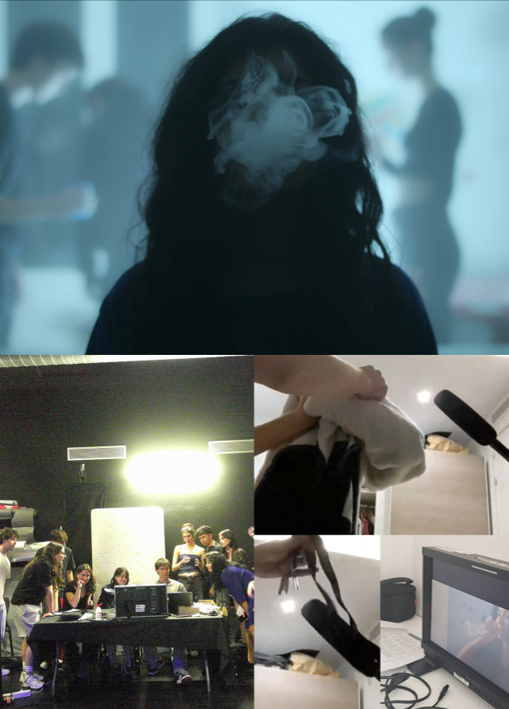
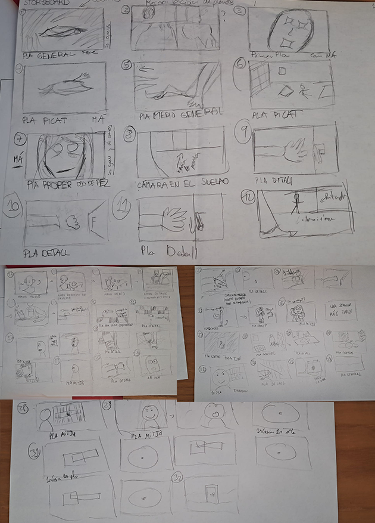

CONTACTA'M

Vols tornar a dalt?
Parlem?
Nosaltres ens en encarreguem de la resta.
uió
roducció
matge
o
El treball va tractar de recrear el so que constituia una escena de la sèrie. Tots els sons que es van gravar eren veus en off i foleys.

Aquest és un projecte que vaig dirigir i guionitzar jo. Es basa en el fet de crear una narrativa a partir de metàfores surrealistes (imitant la corrent).

Vols tornar a dalt?